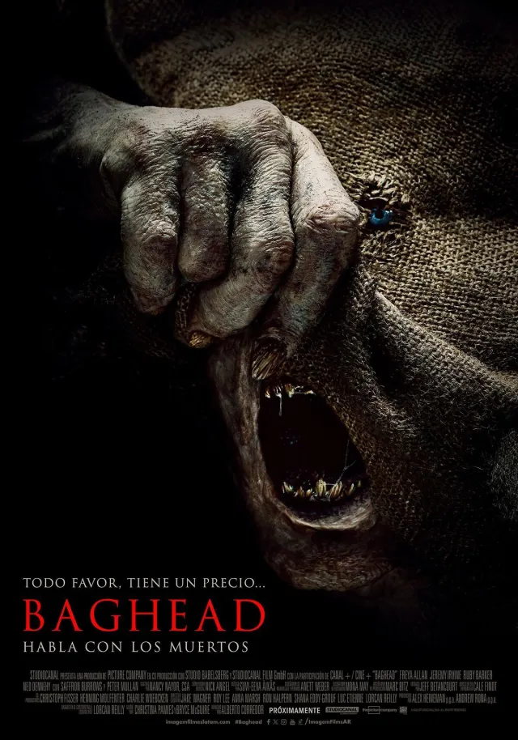
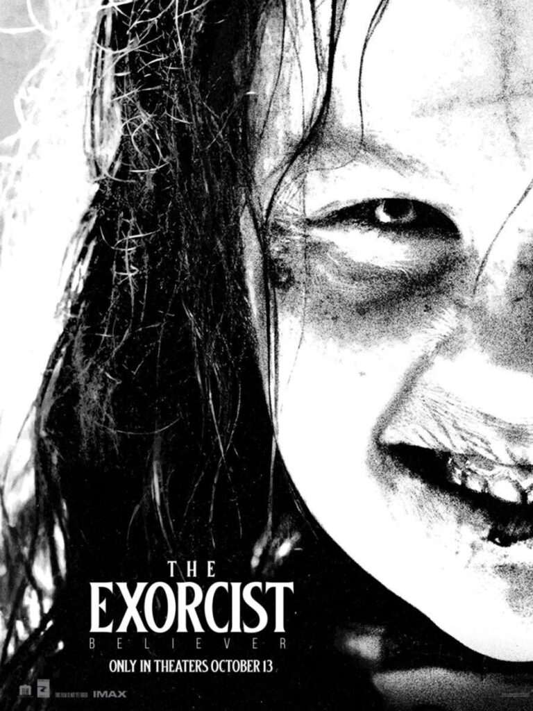
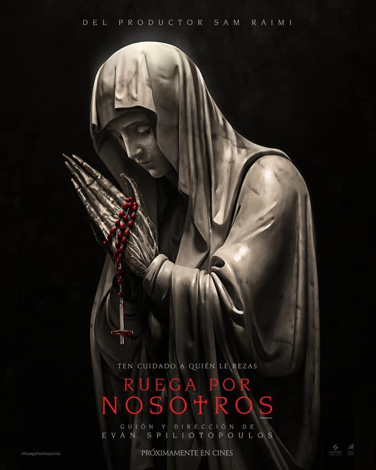

-
evil dead: el Despertar
Trasladando la acción fuera del bosque a la ciudad, “Evil Dead: El despertar” cuenta una historia retorcida de dos hermanas separadas, interpretadas por Sutherland y Sullivan, cuya reunión se ve interrumpida por el surgimiento de demonios que poseen, arrojándolas a un batalla primordial por la supervivencia mientras se enfrentan a la versión más pesadillesca de la familia imaginable.
- 
-
baghead: habla con los muertos
Tras la muerte de su padre (Peter Mullan), Iris (Freya Allan) descubre que ha heredado un antiguo bar en ruinas. Viaja a Berlín para identificar el cuerpo de su padre y reunirse con el abogado (Ned Dennehy) para hablar sobre su herencia. Lo que ella no sabe es que, cuando firme las escrituras, quedará ligada a una entidad indescriptible que habita en el sótano del bar: Baghead, una criatura que cambia de forma y puede tomar la forma de cualquier persona que haya muerto. Dos mil dólares en efectivo por dos minutos con la criatura es todo lo que necesita la gente para hablar con sus seres queridos y calmar su dolor
- 
-
el exorcista: creyente
Hace exactamente cincuenta años que la película más aterradora jamás vista llegó a la gran pantalla, impactando al mundo entero. Y ahora, el 13 de octubre de 2023 empezará un nuevo capítulo. De la mano de Blumhouse y dirigida por David Gordon Green, el cineasta que hizo pedazos el statu quo con la franquicia Halloween, llega EL EXORCISTA: CREYENTE. Desde que falleció su esposa embarazada en el terremoto de Haití hace doce años, Victor Fielding (interpretado por Leslie Odom, Jr., ganador de un Tony y nominado a un Oscar; Una noche en Miami, Hamilton) se ha encargado de cuidar de Angela (Lidya Jewett, la serie “Chicas buenas”), la hija de ambos.
- 
-
ruega por nosotros
la historia de Alice, una joven con discapacidad auditiva que después de una supuesta visitación de la Virgen María, es inexplicablemente capaz de escuchar, hablar y curar a los enfermos. Mientras se corre la voz y gente de todos los lugares acude en masa para presenciar los milagros, un periodista desacreditado (Jeffrey Dean Morgan), con la esperanza de revivir su carrera, visita la pequeña ciudad de Nueva Inglaterra para investigar. Cuando empiezan a suceder sucesos aterradores por todas partes, él comienza a cuestionarse si estos fenómenos son obra de la Virgen María o algo mucho más siniestro.